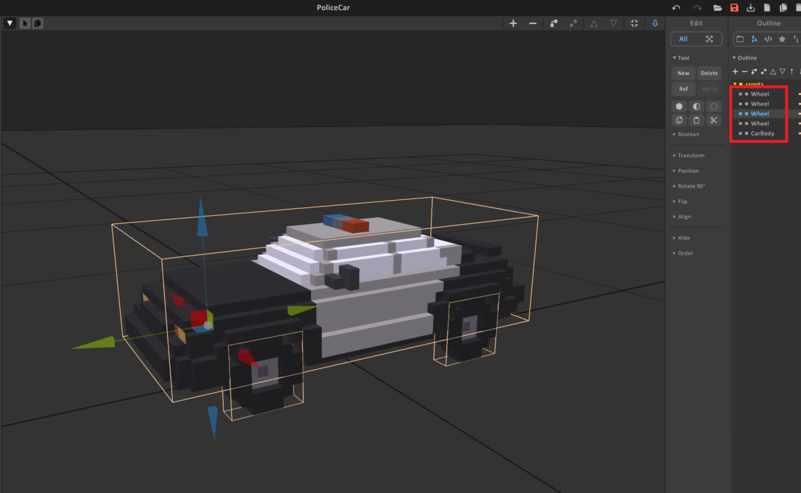
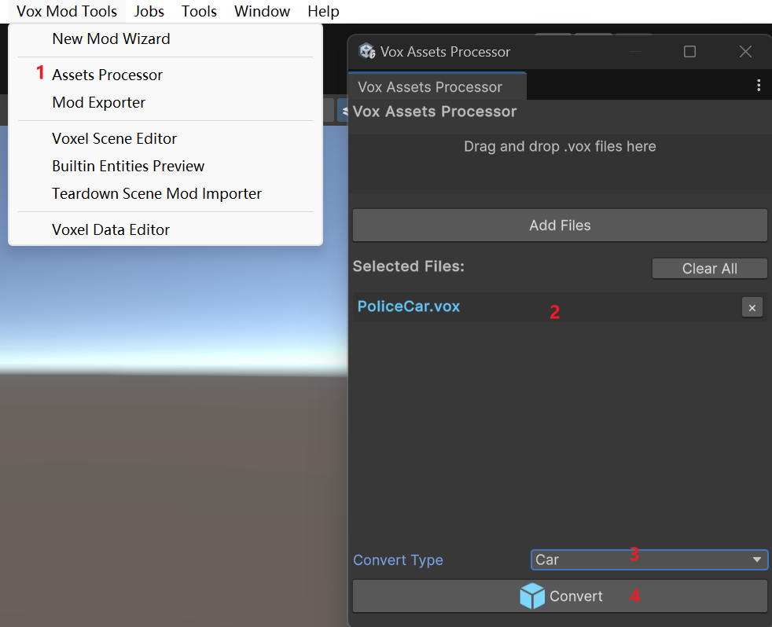
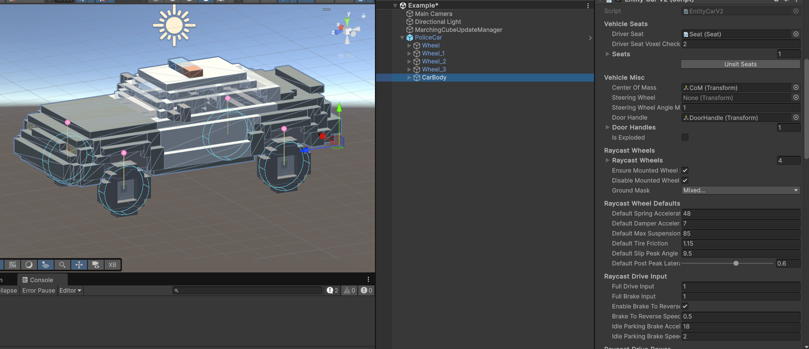

This tutorial explains how to import a voxel car with the dedicated Car importer and tune the generated EntityCarV2 and EntityCarV2Wheel settings until the car feels right in game.
Unlike the helicopter tutorial, a normal car does not need Vehicle Proxy, JsComponentProxy, or custom TypeScript just to drive. Use Convert Type -> Car. The importer creates the body, seats, door handle, center of mass, raycast wheels, and default car handling setup for you.
.voxBuild the car as separate voxel objects in MagicaVoxel. The importer uses names and object sizes to decide which parts become the chassis and which parts become wheels.
Recommended naming:
body, chassis, or main for the main car body.wheel in every wheel model name, such as wheel_fl, wheel_fr, wheel_rl, and wheel_rr.steering in the steering wheel model name if you want the importer to assign the steering wheel visual.EntityCarV2Wheel per wheel.The largest non-wheel object is used as the body if no object name looks like a body. Wheel objects are detected only by the word wheel, so a wheel named tire_fl will import as a normal body part unless you rename it.

Open Vox Assets Processor and import the .vox file:
.vox file into the processor.The car importer creates the playable setup on the detected body object. It adds EntityCarV2, Rigidbody Proxy, a Seat, a DoorHandle, a CoM, and one EntityCarV2Wheel object for each detected wheel.

After import, confirm these basics before tuning:
EntityCarV2 and Rigidbody Proxy.EntityCarV2.Driver Seat points to the generated Seat.EntityCarV2.Center Of Mass points to CoM.EntityCarV2.Door Handle or Door Handles points to the generated door handle.EntityCarV2.Raycast Wheels contains all wheel objects.EntityCarV2Wheel.If the car does not drive, first check that every visual wheel name contains wheel, the Raycast Wheels list is not empty, and the wheel hardpoints are above the wheel centers.
Start with the generated defaults and make small changes. Car handling settings interact with each other, so change one or two related values, test a short drive, then continue.
Useful test loop:

Most cars only need a small set of fields changed after import. Tune the car body first, then adjust individual wheels only if the body-level settings cannot get the handling you want.
| Parameter | Lower value | Higher value |
|---|---|---|
centerOfMass position |
Move CoM lower for a planted car that rolls less and flips less. |
Move CoM higher for more body roll, pitch, and stunt-like instability. |
driveAcceleration |
Softer launch and weaker hill climbing. | Faster launch, stronger throttle, and more wheelspin. This can make power drifting stronger. |
brakeAcceleration |
Longer stopping distance and weaker brake rotation. | Harder braking. In corners this can help the car rotate, but too much can make it skid. |
maxForwardSpeed |
Lower top speed. | Higher top speed if the car has enough power and grip. |
defaultTireFriction |
Less grip, earlier sliding, stronger drifting. | More grip, weaker drifting, better braking and cornering. |
defaultPostPeakLateralGrip |
Sharper breakaway after the car starts sliding; easier aggressive drift. | Smoother slides and easier recovery; drift feels weaker but more controllable. |
driveBalance |
More rear-wheel-drive behavior. Low values make throttle rotation and power drift stronger. | More front-wheel-drive behavior. High values pull the car forward and reduce throttle oversteer. |
brakeBalance |
More rear brake bias, easier brake-induced rotation, more spin risk. | More front brake bias, stronger stopping stability, but can push wide if too high. |
handlingBias |
More stable and understeery. | More rotation and oversteer. Raise this for drift or agile cars. |
highSpeedSteeringLimit |
Safer high-speed turning with a wider turn radius. | Tighter high-speed turning, but more snap spin and rollover risk. |
yawAngularDamping |
Freer yaw, easier spins, stronger drift angle. | More yaw stability, weaker drift, easier recovery. |
antiRollAcceleration |
More body roll and softer cornering feel. | Flatter, sharper cornering. Too high can feel stiff. |
These defaults affect wheels with useCarDefaults enabled.
| Parameter | Lower value | Higher value |
|---|---|---|
defaultSpringAcceleration |
Softer suspension, more roll and brake dive, easier bottoming out. | Holds ride height harder, sharper response, can bounce if too high. |
defaultDamperAcceleration |
Floatier ride and more bouncing after bumps. | Settles faster, but too high can feel heavy or sticky. |
defaultMaxSuspensionAcceleration |
Softer impact limit, but the chassis may hit the ground. | Stronger bump recovery, but hard impacts can kick the car upward. |
Use wheel settings for layout, drivetrain, and special per-wheel tuning.
| Parameter | Lower / off | Higher / on |
|---|---|---|
isSteerable |
Off for fixed wheels, usually rear wheels. | On for wheels that turn, usually front wheels. |
isDriven |
Off means the wheel free-rolls. | On means the wheel receives throttle and reverse force. Use rear driven wheels for stronger power drift, front driven wheels for pull, or all driven wheels for traction. |
radius |
Smaller wheel collision radius; the car rides lower and may scrape. | Larger wheel collision radius; the car rides higher and may look like it floats if too high. |
restLength |
Lower ride height and less suspension travel. | Higher ride height and more travel for rough ground. |
useCarDefaults |
Off lets this wheel override suspension and tire values. | On uses the car body's default values. Keep this on unless a specific wheel needs special handling. |
tireFriction |
With useCarDefaults off, this wheel slides earlier. Lower rear grip makes drift stronger; lower front grip makes understeer stronger. |
With useCarDefaults off, this wheel grips harder. Higher rear grip makes drift weaker; higher front grip improves turn-in. |
Use these as starting points, then test in game.
| Goal | Changes to try |
|---|---|
| Stronger drift car | Lower defaultTireFriction, lower defaultPostPeakLateralGrip, raise handlingBias, lower yawAngularDamping, use rear-wheel drive with low driveBalance. |
| Weaker drift / easier road car | Raise defaultTireFriction, raise defaultPostPeakLateralGrip, lower handlingBias, raise yawAngularDamping, keep driveBalance near 0.5. |
| More stable at high speed | Lower highSpeedSteeringLimit, lower handlingBias, raise yawAngularDamping, raise pitchRollAngularDamping. |
| Faster arcade car | Raise driveAcceleration and maxForwardSpeed, keep enableABS on, use distributeForcesAcrossWheels on. |
| Softer off-road car | Raise restLength, lower spring slightly, raise damper slightly, keep enough defaultMaxSuspensionAcceleration to prevent bottoming out. |
| Lower race car | Lower centerOfMass, lower restLength, raise antiRollAcceleration, raise pitchRollAngularDamping. |
After the car feels correct, add the generated prefab to manifest.asset and export the mod.
Testing checklist:
Raycast Wheels.